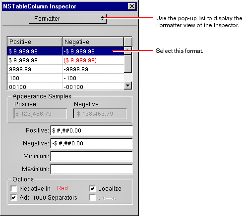

When an attribute is defined in your model as having the internal type Number, a currency formatter is automatically added to any control with which the attribute is associated. Likewise, when an attribute has an NSGregorianDate type, date formatters are added to controls associated with it.
Not all adaptors map, say, the budget attribute to the Number data type. In that case, you won't automatically get currency formatting in the column. You can fix this problem either by setting budget's internal type to be Number in the model, or you can add a currency formatter to the column (as described in
Writing Derived Methods
).
Once a control has a formatter, you can use the Inspector to change it.
Set field formatting.
Select the
Budget
column head in the table view, and display the Formatter view of the NSTableColumn Inspector.
Change the format to a standard currency format.

Do not set the format to show negative values in red. The JFC currently does not implement colored text.